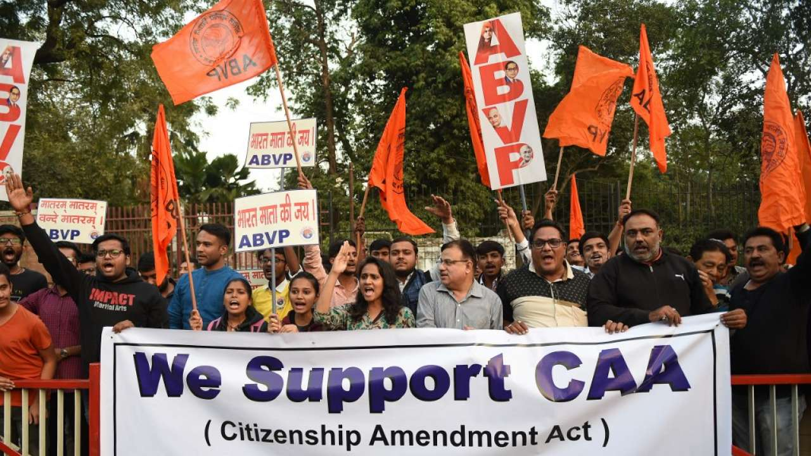
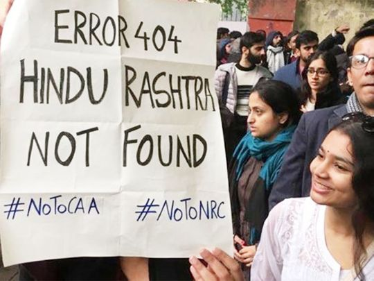
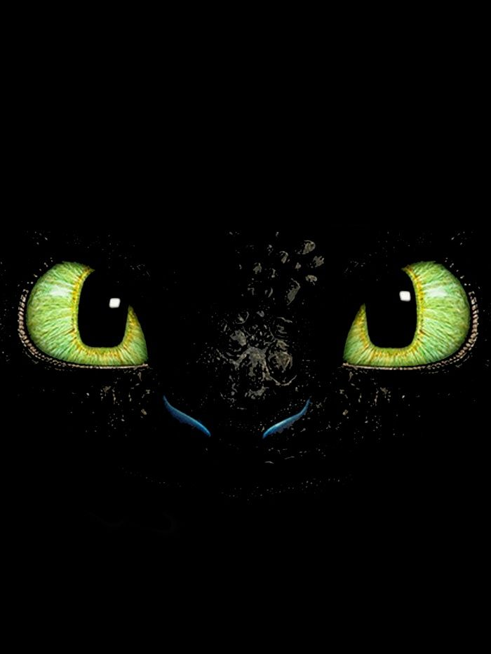
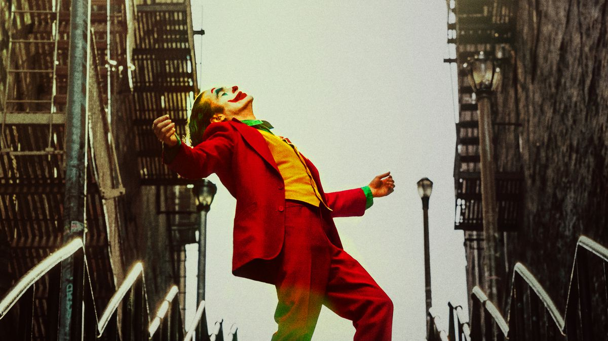

Been taking courses on various topics in CS ever since the lockdown started. Nothing made much sense.. until coursera! Mid May, I guess, I started doing a course on Web development. I saw most people going to React js and so, I wanted something else. And thats how I met angular!
Love at first sight -Typescript! OOP in web dev! What more do you want, I thought. After completion, did a server side development course which involved node, express and mongodb. That didn't make much sense.. but come June 30, I wondered whether I had enough knowledge to make a fully functioning website. The answer came out to be YES! Here began my work on Emotify.
I had set July 10 as the deadline. By July 8, realisation! I know nothing on server. By july 10, more realisation! I know nothing on angular! After thousands of stackoverflow visits, hundreds of blog visits and days and nights where nothing seemed to happen, my work is finally complete!
I wanted to put my html and css skills to the test as well. Hence, i went looking for good websites and found a mighty impressive one at girlboss.com! I tweaked it a bit and am pretty content how it turned out. Perhaps certain appearance boosters for mobile screens sometime later.
Emotify taught me quite a lot of lessons, some of which, ill share with you here:-
Site without server is pretty different from a site with server.
Running a site locally and running a site on a cloud are 2 sides of different coins!
Websites which may appear to be simple, could really be one of the more complex ones.
Simplicity has its own esteemed class!
When I joined MEC, I said to myself, at the end of 4 years, atleast you need to know how to make a proper website. Expectaions raised coz now ima MEAN developer!
Quarantine Thoughts
Date:02/04/2020
They say education makes a person better, to be civilised, to be a man of culture. But in these tough times I ask, does it?
Perhaps it is the experiences that makes a person who he/she is... just as in the movies, is it?
What if I tell you that the abilities to analyse and react are the key?
If you think about it, these are key to any profession. Hence, everyone has these in certain amounts but is attributed to a certain field.
More often than not, these abilities tend to disappear when one is taken out of their specialised fields.
How?
Perhaps they have spent too much time thinking about one aspect of life that they stopped looking at what's happening around them.
Maybe they're overconfident of their skill at analysis or they're just too stubborn to make changes to their normal life.
These abilities helps one to sort right from wrong and also helps one to develop a clear cut understanding of any situation/event which is lacking in the youth majority these days. This makes one wonder what the purpose of our educational system is, upto 10th (common for all) - whether it is on the idea -
" Education makes one better " or " To provide a pre-requisite knowledge to all courses/subjects ".
And this is exactly the problem!
There is no emphasis on analysis and reaction.
Decoding CSA
Date: 20/02/2020
CSA, on the outside, seems to be a class that has somehow landed from outer space. They seem to find joy in everything that's happening around them.
The million dollar question hence is quite obvious: How do they do that?
CSA themselves have the answer: United.
Be it happiness or sadness, logical or illogical, relevant or irrelevant, CSA seem to celebrate everything and anything together. The bonding this class has achieved in such a short period of time has been unbelievable, yet fascinating to each of the onlookers.
Unity though, is not an easy trait to achieve. Especially, when it's a coming together of people of vast social, economic, religious and linguistic differences. This gives rise to yet another question: How united?
Closer analysis has revealed that the past has left significant scars on their majority. This unity, hence, seems to be the result of those individual attempts trying to turn a page and start afresh.
These collective individual efforts along with that natural teen desire for frolics seemingly has made CSA that class in everyone's dreams.
The future of CSA seems bright. They seem to be a multi-talented group facing life with a smile. If "When spiders unite, they can tie down a lion", and CSA already seem to be a pride of lions... one can only imagine what's in the making.
CAA_NRC: Whats Happening?
Date: 10/01/2020
The Citizenship Amendment Act has inarguably divided the nation. This has reflected in the widespread protests happening all over the country.
The act gives citizenship to Hindu, Sikh, Jain, Buddhist Christian and Parsi refugees from Pakistan, Afghanistan and Bangladesh who have been residing in the country from before the 31st of December 2014. Here, I try to make an impartial analysis of the act and its connection with the National Register of Citizens.
Why CAA?:
Pakistan, Afghanistan and Bangladesh are all Muslim majority countries. The number of minorities in these countries is claimed to have declined over the years. Reports of religious persecution on minorities had paved the way for the Liaquat-Nehru Pact in 1950, which called for the exchange of minorities between india and Pakistan (including east pakistan a.k.a Bangladesh). The CAA can be seen as a further step in securing these minorities.

Why the protests?:
The act picks out certain religious minority groups from muslim dominated countries. Sections of muslims in these countries are claimed to be persecuted. Irreligious people are also left out. Also, the act does not take into consideration the refugees from other neighbouring countries namely Myanmar, Sri Lanka and Nepal where religious persecution has been reported. Protesters believe the act is against the Secular constitution of the country and believes it discriminates people on the basis of religion.
NRC + CAA:
The National Register of citizens calls for people to prove their citizenship. It was implemented in Assam to identify illegal immigrants in the state. Its implementation in Assam has come under a lot of scrutiny as a high number of claimed to be genuine citizens have been classed illegal. Home minister Amit Shah had stated that a nation wide NRC would be carried out in the future. Protesters claim that the religious minorities in CAA would get a free pass in the NRC whereas the other minorities don't. Prime Minister Narendra Modi though, has contradicted the statement made by Amit Shah by saying that there have been no discussions on a nation wide NRC.

Future:
Widespread protests have been happening all over the country, both violent and non violent. Amit Shah has stated that no matter what, BJP would continue with the CAA. Surprisingly, despite the protests, the Supreme court has not made any steps to immediately consider the many petitions challenging the constitutional validity of the Act. The future of the act, it seems now, will depend on the ruling of the Supreme court and the future of the protests on how quick the verdict is delivered.
I have a Dragon!

Date: 26/11/2019
Away away from the ellows and greens,
time ticked slow.
In the white two balls of black,
Surprise surprise..,
sent no fear down my spine.
Scaled face, pointy teeth,
Monstrous wings and a never ending tail!
Blinked did I, and in the blue,
a dragon stood..,
Fierce and strong.
In the black I relived my pain,
the dragon looked all the same.
But as my cheeks wet more and more,
Fire swallowed the black in whole.
At once I reached, for his face,
down in vain, and suddenly a fade.
A gust of wind on my face,
and in the skies, I saw him next.
Down to earth, yet skywards he went,
for from the fire he was born..,
and so was I lifted from the blue,
Dawned in that brighter morrow,
a fire rekindled somewhere in,
to unleash from within,
my all familiar dragon,
who I am destined to be..!
Hope

Date: 02/11/2019
Woke with a sound,
one which filled hope,
reminiscent of a future,
a future as bright as Caesar.
Hope met belief,
Soulmates indeed!
as the rain came down, soon enough,
Hand in hand they walked,
down the narrow lane,
cheers echoed through the streets,
all until..,
the rain led into the night.
Our lovely couples blinded sudden,
afraid and perplexed!
a moment back an assuring crowd,
now the demons that dragged them down.
Hope is what is all that's left,
Hope for the night to end,
Hope to see the sun again.
Hope has made him a new man.
A new man who keeps hope,
even in hopeless times,
aware of the monsters within and out,
Smile, Smile and Smile...,
puts on a happy face.